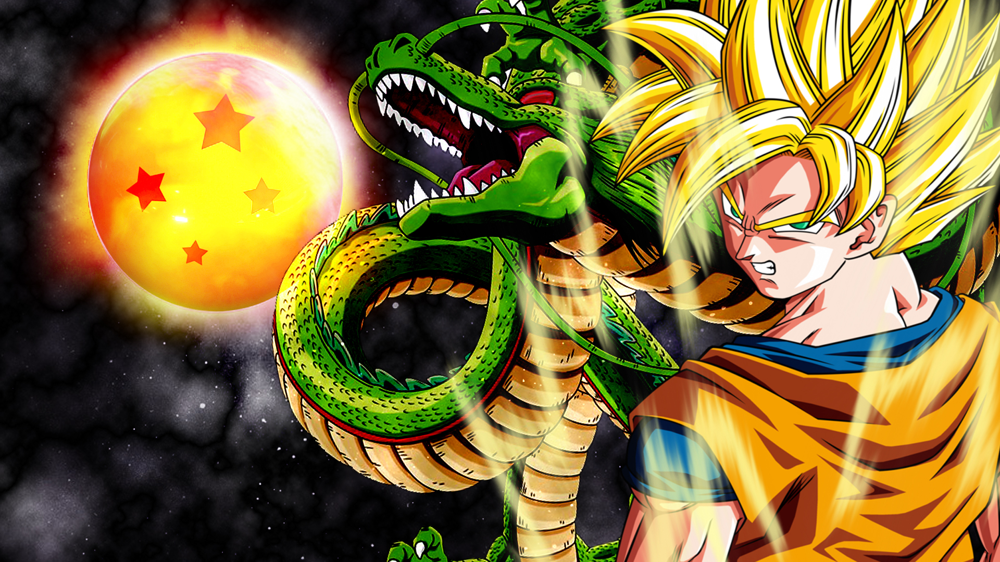

Bem-vindo ao incrível Universo
de
Dragon Ball
Dragon Ball clássico é o primeiro anime da franquia lançado, marcado pelo desenvolvimento dos personagens em força e em personalidade.
Sinopse: Goku é um garoto que mora sozinho nas montanhas. Um dia qualquer, por coincidência, ele conhece Bulma, uma jovem cientista que estava em busca das Esferas do Dragão, artefatos místicos que, quando juntos, realizam qualquer desejo. Bulma convence Goku a ajudá-la e assim se inicia a primeira aventura de Dragon Ball.
Dragon Ball Z é o anime mais popular de Dragon Ball, ele é uma continuação de Dragon Ball Clássico.
Sinopse:
Após os eventos de Dragon Ball Clássico, Dragon Ball Z acompanha a vida adulta de Goku onde ele descobre a existência de Saiyajins sobreviventes e de ameaças de um nível jamais visto no anime. Enquanto enfrenta inimigos formidáveis como Vegeta, Freeza, Cell e Majin Buu, Goku deve alcançar novos níveis de poder, desencadeando as lendárias transformações Super Saiyajin. Com batalhas épicas e sacrifícios, Dragon Ball Z explora o universo de Dragon Ball como: Planetas, Galáxias,Raças etc.
Dragon Ball Clássico
Dragon Ball Z
Dragon Ball Super conta a história de Goku após os acontecimentos de Dragon Ball Z.
Sinopse: Após a derrota de Majin Buu, o Planeta Terra encontra-se em paz novamente. No entanto, com o despertar de um Deus da Destruição, a história de Dragon Ball Super se inicia. Nessa aventura, Goku e seus amigos enfrentam desafios cada vez maiores, como batalhas multiversais e confrontos em diferentes linhas temporais. Além disso, a série também explora o Mundo Divino de Dragon Ball. Os heróis lutam para proteger seu universo enquanto descobrem segredos ocultos e desbloqueiam novos níveis de poder. Com uma mistura emocionante de ação, viagens no tempo e mitologia, Dragon Ball Super proporciona uma jornada empolgante e épica através do universo Dragon Ball.
Dragon Ball GT apesar de muito conhecido, ele não faz parte da linha temporal principal de Dragon Ball.
Sinopse: Goku é tranformado em criança acidentalmente pelas esféras do Dragão, e para retornar a sua forma normal ele precisa reuni-las novamente, porém essas esféras estão espalahadas por todo o universo tornando o desafio ainda maior, para alcançar seu objetivo Goku se une a Trunks e pan e juntos embarcam nessa jornada. No decorrer do objetivo Goku se depara com diversos inimigos extremamente ameaçadores o que faz colocar o protagonista a prova o tempo todo.
Dragon Ball Super
Dragon Ball GT